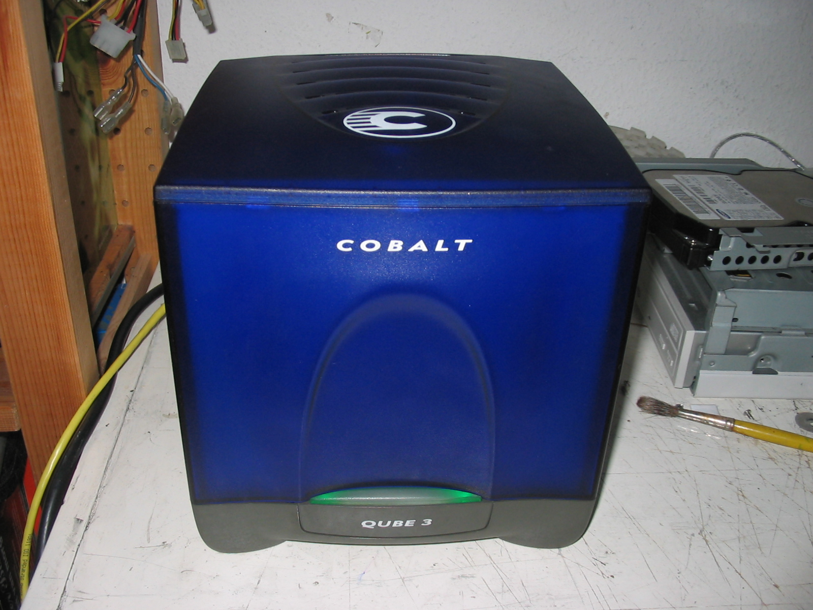

📖 Overview
Servers are the backbone of the internet and enterprise computing. They are engineered for 24/7 reliability, massive I/O throughput, and high-density compute.
⚙️ Architecture & Working Principle
Features multi-socket motherboards, ECC (Error-Correcting Code) RAM, redundant power supplies (PSUs), hardware RAID controllers, and baseboard management controllers (BMCs) for out-of-band management.
Servers run specialized OSs (Linux, Windows Server) to host hypervisors (ESXi, Proxmox) or container engines (Docker, Kubernetes) to maximize hardware utilization across multiple virtual instances.
🖼️ Technical Diagrams

Source | License: Public Domain / Creative Commons via Wikimedia